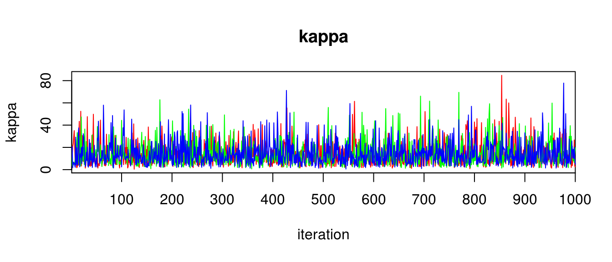
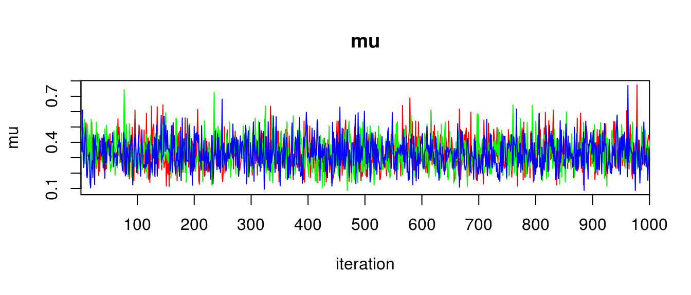
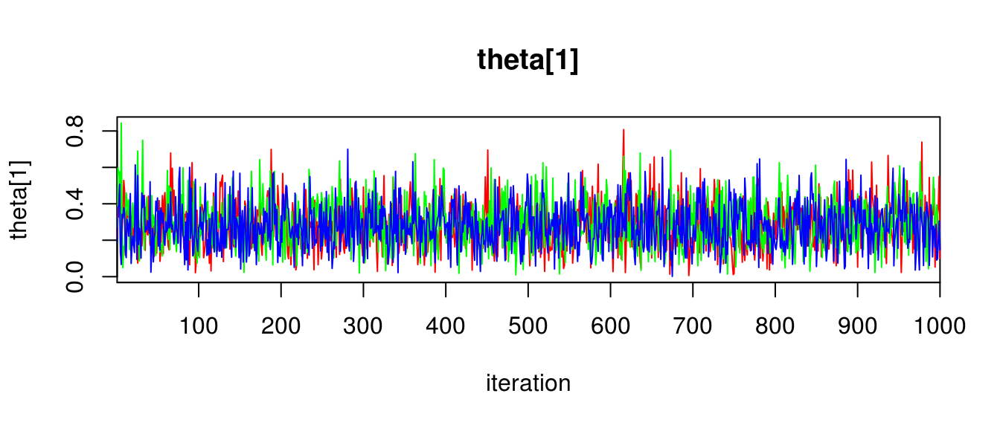
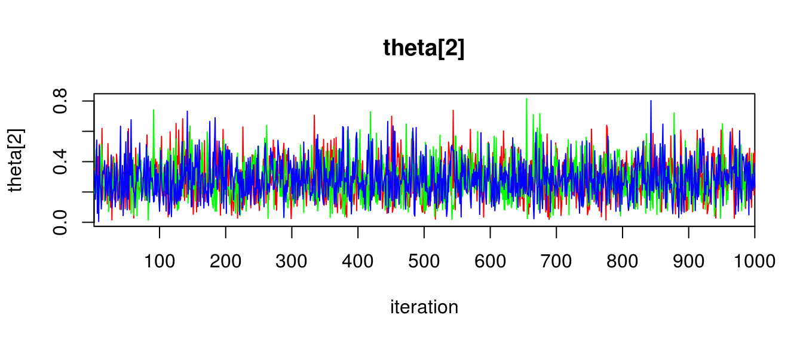
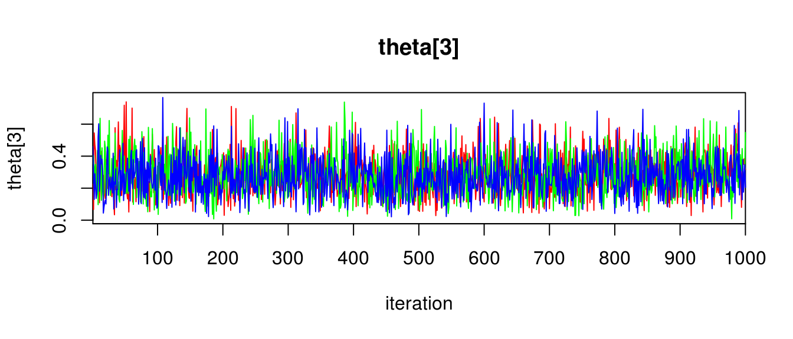
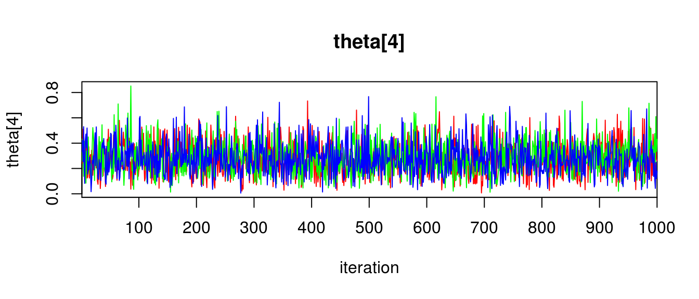
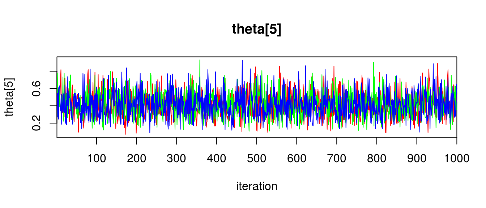
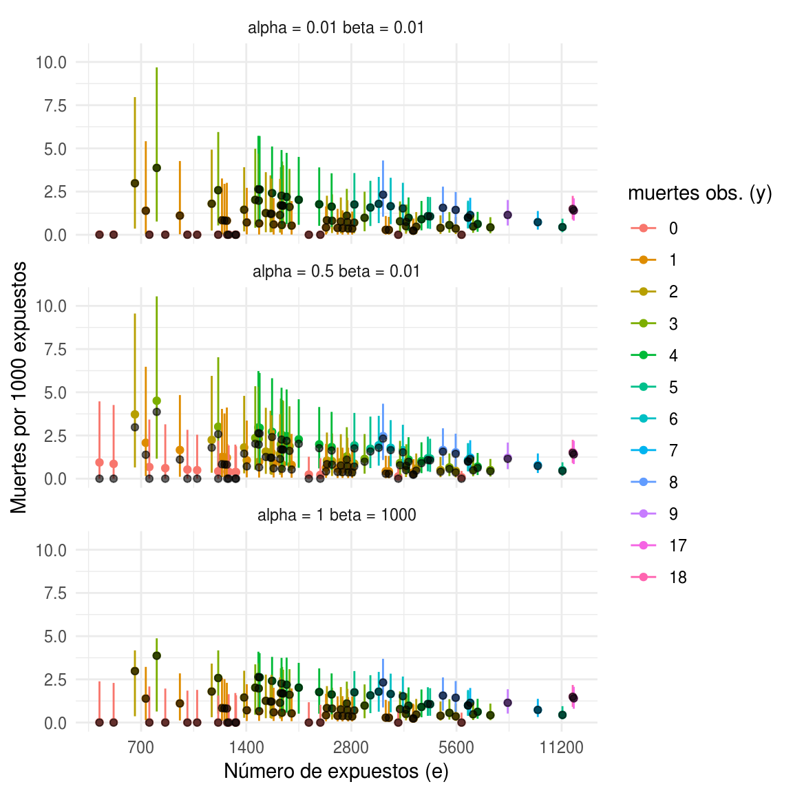
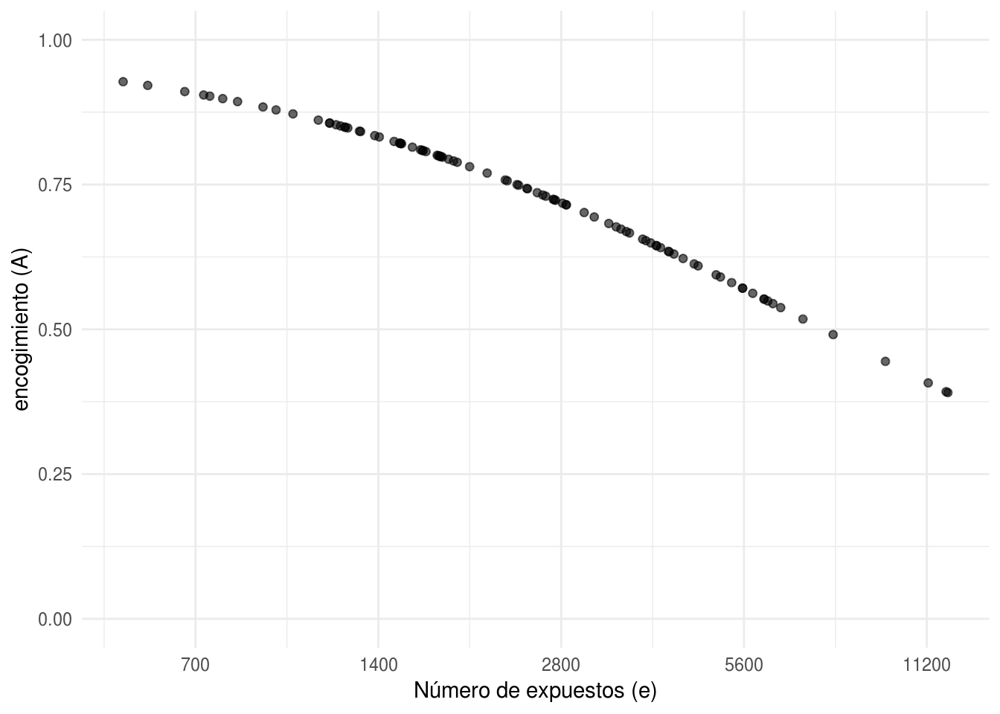
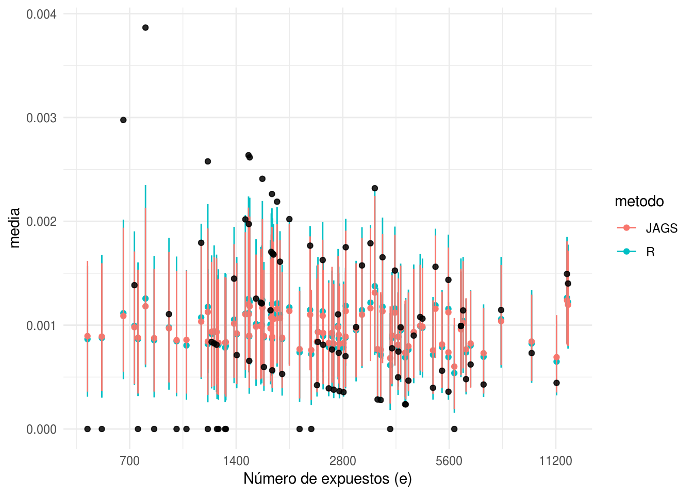

10.11 Modelos jerárquicos
Los modelos jerárquicos involucran varios parámetros de tal manera que las creencias de unos de los parámetros dependen de manera significativa de los valores de otros parámetros. Por ejemplo, consideremos el caso en el que tenemos varias monedas acuñadas en la misma casa de monedas, es razonable pensar que una fábrica sesgada a águilas tenderá a producir monedas con sesgo hacia águilas. La estimación del sesgo de una moneda depende de la estimación del sesgo de la fábrica que a su vez está influido por los datos de todas las monedas. Veremos que la estructura de dependenica a lo largo de los parámetros generan estimaciones mejor informadas para todos los parámetros.
Si pensamos únicamente en dos monedas que provienen de la misma casa de moneda tenemos:
Conocimientos iniciales de los posibles valores de los parámetros (sesgos de las monedas).
Tenemos conocimiento inicial de la dependencia de los parámetros por provenir de la misma fábrica.
Cuando observamos lanzamientos de las monedas actualizamos nuestras creencias relativas a los sesgos de las monedas y también actualizamos nuestras creencias acerca de la dependencia de los sesgos.
Recordemos el caso de lanzamientos de una moneda, le asignamos una inicial beta, recordemos que la distribución beta tienen dos parámetors \(a\) y \(b\):
\[p(\theta)=\frac{1}{B(a,b)}\theta^{a-1}(1-\theta)^{b-1}\]
Con el fin de hacer los parámetros más intuitivos los podemos expresar en términos de la media \(\mu\) y el tamaño de muestra \(K\), donde \(\mu\) es la media de nuestro conocimiento inicial y la confianza está reflejada en el tamaño de muestra \(K\). Entonces los parámetros correspondientes en la distribución beta son:
\[a=\mu K, b = (1-\mu)K\]
Ahora introducimos el modelo jerárquico. En lugar de especificar un valor particular para \(\mu\), consideramos que \(\mu\) puede tomar distintos valores (entre 0 y 1), y definimos una distribución de probabilidad sobre esos valores. Podemos pensar que esta distribución describe nuestra incertidumbre acerca de la construcción de la máquina que manufactura las monedas.
Veamos que en el caso de más de una moneda el modelo permite que cada moneda tenga un sesgo distinto pero ambas tenderán a tener un sesgo cercano a \(\mu\), algunas aleatoriamente tendrán un valor de \(\theta\) mayor a \(\mu\) y otras menor. Entre más grande \(K\) mayor será la consistencia de la acuñadora y los valores \(\theta\) serán más cercanos a \(\mu\). Si observamos varios lanzamientos de una moneda tendremos información tanto de \(\theta\) como de \(\mu\).
Para hacer un análisis bayesiano aún nos hace falta definir la distribución inicial sobre los parámetros \(\mu\), usemos una distribución Beta:
\[p(\mu)=beta(\mu|A_{\mu}, B_{\mu})\]
donde \(A_{\mu}\) y \(B_{\mu}\) se conocen como hiperparámetros y son constantes. En este caso, consideramos que \(\mu\) se ubica típicamente cerca de \(A_{\mu}/(A_{\mu} + B_{\mu})\) y \(K\) se considera constante.
Modelo jerárquico una moneda
Recordemos que en el ejemplo de una moneda teníamos que la verosimilitud era Bernoulli:
\[p(x|theta) = \theta^x(1-\theta)^{1-x}\]
Y si utilizamos las iniciales Beta para \(\mu\) y \(\theta\) como discutimos arriba, solo nos resta aplicar la regla de Bayes con nuestros dos parámetros desconocidos \(\mu\) y \(\theta\):
\[p(\theta, \mu|x)=\frac{p(x|\theta,\mu)p(\theta,\mu)}{p(x)}\]
Hay dos aspectos a considerar en el problema:
La verosimilitud no depende de \(\mu\) por lo que \[p(x|\theta, \mu)=p(x|\theta)\]
La distribución inicial en el espacio de parámetros bivariado se puede factorizar:
\[p(\theta,\mu)=p(\theta|\mu)p(\mu)\]
Por lo tanto \[p(\theta,\mu|x)=\frac{p(x|\theta,\mu)p(\theta,\mu)}{p(x)}\] \[=\frac{p(x|\theta)p(\theta|\mu)p(\mu)}{p(x)}\] El siguiente modelo gráfico resume las independencias condicionales de la última ecuación:
Aproximación por cuadrícula
En el caso jerárquico, no se puede derivar la distribución posterior de manera
analítica pero si los parámetros e hiperparámetros toman un número finito de
valores y no hay muchos de ellos, podemos aproximar la posterior usando
aproximación por cuadrícula.
A continuación graficamos las distribuciones correspondientes al caso en que la distribución del hiperparámetro \(\mu\) tiene la forma de una distribución Beta(2, 2), es decir creemos que la media de la acuñadora \(\mu\) es 0.5, pero existe bastante incertidumbre acerca del valor.
La distribución de \(\theta\), esto es la distribución inicial que refleja la dependencia entre \(\theta\) y \(\mu\) se expresa por medio de otra distribución beta, en el ejemplo usamos K=100:
\[\theta|\mu \sim beta(\mu 100, (1-\mu)100)\]
Esta inicial expresa un alto grado de certeza que una acuñadora con hiperparámetro \(\mu\) genera monedas con sesgo cercano a \(\mu\)

Verosimilitud.

Posterior.

Multiples monedas de una misma fábrica
La sección anterior considera el escenario en que lanzamos una moneda y hacemos inferencia del parámetro de sesgo \(\theta\) y del hiperparámetro \(\mu\). Ahora consideramos recolectar información de múltiples monedas, si cada moneda tiene su propio sesgo \(\theta_j\) entonces debemos estimar un parámetro distinto para cada moneda.
Suponemos que todas las monedas provienen de la misma fábrica, esto implica que tenemos la misma información inicial \(\mu\) para todas las monedas. Suponemos también que cada moneda se acuña de manera independiente, esto es, que condicional al parámetro \(\mu\) los parámetros \(\theta_j\) son independientes en nuestros conocimientos iniciales.
Posterior vía aproximación por cuadrícula
Supongamosque tenemos dos monedas de la misma fábrica. El objetivo es estimar los sesgos \(\theta_1\), \(\theta_2\) de las dos monedas y estimar simultáneamente el parámetro \(\mu\) correspondiente a la casa de moneda que las fabricó.
Inicial.

Verosimilitud.

Posterior.

JAGS
La sección anterior utilizó un modelo simplificado con el objetivo de poder visualizar el espacio de parámetros. Ahora incluiremos más parámetros para hacer el problema más realista. En los ejemplos anteriores fijamos el grado de dependencia entre \(\mu\) y \(\theta\) de manera arbitraria, a través de \(K\), de tal manera que si \(K\) era grande, los valores \(\theta_j\) individuales se situaban cerca de \(\mu\) y cuando \(K\) era pequeña se permitía más variación.
En situaciones reales no conocemos el valor de \(K\) por adelantado, por lo que dejamos que los datos nos informen acerca de valores creíbles para \(K\). Intuitivamente, cuando la proporción de águilas observadas es similar a lo largo de las monedas, tenemos evidencia de que \(K\) es grande, mientras que si estas proporciones difieren mucho, tenemos evidencia de que \(K\) es pequeña. Debido a que \(K\) pasará de ser una constante a ser un parámetro lo llamaremos \(\kappa\).
La distribución inicial para \(\kappa\) será una Gamma.
library(R2jags)
modelo_jer.bugs <-
'
model{
for(t in 1:N){
x[t] ~ dbern(theta[coin[t]])
}
for(j in 1:nCoins){
theta[j] ~ dbeta(a, b)
}
a <- mu * kappa
b <- (1 - mu) * kappa
# A_mu = 2, B_mu = 2
mu ~ dbeta(2, 2)
kappa ~ dgamma(1, 0.1)
}
'\(\kappa \sim Gamma(1, 0.1)\), esta tiene media 10 y desviación estándar 10.
Los datos consisten en 5 monedas, cada una se lanza 5 veces, resultando 4 de ellas en 1 águila y 4 soles y otra en 3 águilas y 2 soles.
cat(modelo_jer.bugs, file = 'modelo_jer.bugs')
x <- c(0, 0, 0, 0, 1, 0, 0, 0, 0, 1, 0, 0, 0, 0, 1, 0, 0, 0, 0, 1, 0, 0, 1, 1, 1)
coin <- c(rep(1, 5), rep(2, 5), rep(3, 5), rep(4, 5), rep(5, 5))
jags.inits <- function(){
list("mu" = runif(1, 0.1, 0.9),
"kappa" = runif(1, 5, 20))
}
jags_fit <- jags(
model.file = "modelo_jer.bugs", # modelo de JAGS
inits = jags.inits, # valores iniciales
data = list(x = x, coin = coin, nCoins = 5, N = 25), # lista con los datos
parameters.to.save = c("mu", "kappa", "theta"), # parámetros por guardar
n.chains = 3, # número de cadenas
n.iter = 10000, # número de pasos
n.burnin = 1000 # calentamiento de la cadena
)
#> Compiling model graph
#> Resolving undeclared variables
#> Allocating nodes
#> Graph information:
#> Observed stochastic nodes: 25
#> Unobserved stochastic nodes: 7
#> Total graph size: 65
#>
#> Initializing model
R2jags::traceplot(jags_fit, varname = c("kappa", "mu", "theta"))
jags_fit
#> Inference for Bugs model at "modelo_jer.bugs", fit using jags,
#> 3 chains, each with 10000 iterations (first 1000 discarded), n.thin = 9
#> n.sims = 3000 iterations saved
#> mu.vect sd.vect 2.5% 25% 50% 75% 97.5% Rhat n.eff
#> kappa 14.213 10.626 2.128 6.483 11.385 19.053 42.222 1 2100
#> mu 0.330 0.098 0.156 0.263 0.323 0.395 0.538 1 3000
#> theta[1] 0.286 0.128 0.065 0.191 0.278 0.370 0.561 1 1400
#> theta[2] 0.286 0.130 0.067 0.192 0.277 0.368 0.567 1 3000
#> theta[3] 0.283 0.128 0.069 0.189 0.271 0.364 0.573 1 1300
#> theta[4] 0.283 0.129 0.066 0.185 0.273 0.365 0.557 1 1200
#> theta[5] 0.417 0.146 0.167 0.311 0.406 0.512 0.731 1 3000
#> deviance 30.318 2.102 27.521 28.803 29.924 31.329 35.603 1 2900
#>
#> For each parameter, n.eff is a crude measure of effective sample size,
#> and Rhat is the potential scale reduction factor (at convergence, Rhat=1).
#>
#> DIC info (using the rule, pD = var(deviance)/2)
#> pD = 2.2 and DIC = 32.5
#> DIC is an estimate of expected predictive error (lower deviance is better).sims_df <- data.frame(n_sim = 1:jags_fit$BUGSoutput$n.sims,
jags_fit$BUGSoutput$sims.matrix) %>%
dplyr::select(-deviance) %>%
gather(parametro, value, -n_sim)
ggplot(filter(sims_df, parametro != "kappa"), aes(x = value)) +
geom_histogram(alpha = 0.8) + facet_wrap(~ parametro)
#> `stat_bin()` using `bins = 30`. Pick better value with `binwidth`.
ggplot(filter(sims_df, parametro == "kappa"), aes(x = value)) +
geom_histogram(alpha = 0.8)
#> `stat_bin()` using `bins = 30`. Pick better value with `binwidth`.
Stan
modelo_jer.stan <-
'
data {
int N;
int x[N];
int nCoins;
int coin[N];
}
parameters {
real<lower=0,upper=1> theta[nCoins];
real<lower=0,upper=1> mu;
real<lower=0> kappa;
}
transformed parameters {
real<lower=0> a;
real<lower=0> b;
a = mu*kappa;
b = (1-mu)*kappa;
}
model {
theta ~ beta(a,b);
x ~ bernoulli(theta[coin]);
mu ~ beta(2, 2);
kappa ~ gamma(1, 0.1);
}
'
cat(file = "modelo_jer.stan", modelo_jer.stan)
stan_jer_cpp <- stan_model("modelo_jer.stan")
stan_jer_fit <- sampling(stan_jer_cpp,
data = list(x = x, coin = coin, nCoins = 5, N = 25), chains = 2,
cores = 2, iter = 400, warmup = 100)summary_stan_jer_fit$summary
#> mean se_mean sd 2.5% 25% 50% 75% 97.5%
#> theta[1] 0.289 0.00766 0.1249 0.0744 0.200 0.274 0.368 0.575
#> theta[2] 0.292 0.00759 0.1293 0.0748 0.205 0.279 0.368 0.589
#> theta[3] 0.297 0.00708 0.1240 0.0734 0.216 0.285 0.373 0.564
#> theta[4] 0.298 0.00701 0.1264 0.0760 0.210 0.284 0.372 0.587
#> theta[5] 0.410 0.00804 0.1435 0.1634 0.325 0.394 0.494 0.745
#> mu 0.335 0.00631 0.0981 0.1780 0.264 0.327 0.393 0.551
#> kappa 15.668 0.80857 10.5208 3.0674 8.104 13.510 20.156 43.563
#> a 5.075 0.30200 3.5354 0.9544 2.648 4.173 6.478 14.273
#> b 10.592 0.55036 7.5108 1.7908 4.977 8.929 13.832 31.860
#> lp__ -21.812 0.18573 2.3505 -27.5118 -23.219 -21.436 -20.095 -18.483
#> n_eff Rhat
#> theta[1] 266 1.003
#> theta[2] 290 1.002
#> theta[3] 307 1.007
#> theta[4] 325 0.997
#> theta[5] 319 0.997
#> mu 241 1.004
#> kappa 169 0.999
#> a 137 1.002
#> b 186 1.000
#> lp__ 160 1.001Ejemplo: estimación de tasas de mortalidad
En esta sección veremos un problema de estimación de tasas de mortalidad. Plantearemos 3 alternativas de modelación para resolver el problema: modelo de unidades iguales, modelo de unidades independientes y finalmente modelo jerárquico.
La base de datos tiene información de todas las cirugías de transplante de corazón llevadas a cabo en Estados Unidos en un periodo de 24 meses, entre octubre de 1987 y diciembre de 1989. Para cada uno de los 131 hospitales, se registró el número de cirugías de transplante de corazón, y el número de muertes durante los 30 días posteriores a la cirugía, \(y\). Además, se cuenta con una predicción de la probabilidad de muerte de cada paciente individual. Esta predicción esta basada en un modelo logístico que incluye información a nivel paciente como condición médica antes de la cirugía, género, sexo y raza. En cada hospital se suman las probabilidades de muerte de sus pacientes para calcular el número esperado de muertes, \(e\), conocido como la exposición del hospital; \(e\) refleja el riesgo de muerte debido a la mezcla de pacientes que componen un hospital particular.
La matriz de datos que analizaremos considera únicamente los 94 hospitales que llevaron a cabo 10 o más cirugías, y consiste en las duplas \((y_{j}, e_{j})\) que corresponden al número observado de muertes y número de expuestos para el \(j\)-ésimo hospital, con \(j = 1,...,94\).
library(LearnBayes)
data(hearttransplants)
heart <- hearttransplants
head(heart)
#> e y
#> 1 532 0
#> 2 584 0
#> 3 672 2
#> 4 722 1
#> 5 904 1
#> 6 1236 0El objetivo es obtener buenas estimaciones de las tasas de mortalidad de cada hospital. Antes de comenzar a ajustar modelos complejos vale la pena observar los datos. El cociente \(\{y_{j}/e_{j}\}\) es el número observado de muertes por unidad de exposición y se puede ver como una estimación de la tasa de mortalidad. La siguiente figura grafica, en el eje vertical los cocientes \(\{y_{j}/e_{j}\}\) multiplicados por 1000 (con la intención de que la tasa indique número de muertes por 1000 expuestos), y en el eje horizontal el número de expuestos \(\{e_{j}\}\) -en escala logarítmica- para los 94 hospitales. Cada punto representa un hospital y esta etiquetado con el número de muertes observadas \(\{y_{j}\}\). En la gráfica podemos notar que las tasas estimadas son muy variables, especialmente para programas con baja exposición. Observemos también, que la mayoría de los programas que no experimentaron muertes tienen bajo número de expuestos.
ggplot(heart, aes(x = log(e), y = 1000* y / e, color = factor(y), label = y)) +
geom_text(show.legend = FALSE) +
scale_x_continuous("Número de expuestos (e)", labels = exp,
breaks = c(log(700), log(700*2), log(700*2^2), log(700*2^3),
log(700*2^4))) 
La variabilidad de las tasas y los hospitales sin muertes sugieren un problema de tamaño de muestra. Consideremos un hospital con 700 expuestos. La muerte por transplante de corazón no es común, el promedio nacional es de 9 por cada 10,000 expuestos, por lo que con 700 expuestos es probable que no se presente ninguna muerte, en este caso el hospital pertenece al 10% de los hospitales con menor tasa de mortalidad. Sin embargo, existe la posibilidad de que se observe una muerte, con lo cual el hospital tendrá una tasa de mortalidad que es lo suficientemente alta para que quede en el 25% de los hospitales con mayor tasa de mortalidad observada.
Una vez reconocido el problema de utilizar los datos crudos para estimar las tasas de mortalidad plantearemos 3 alternativas de modelación:
- Unidades iguales. Considera que los estudios son replicas idénticas una de otra, en este sentido vemos a las observaciones de todos los estudios como muestras independientes de una misma población y consecuentemente todas las \(\lambda_{j}\) se consideran iguales,
\[ \begin{eqnarray} \nonumber y_{j} &\sim& f(y_{j}|\lambda),\\ \nonumber \lambda &\sim& g(\lambda). \end{eqnarray} \] El modelo gráfico correspondiente a este enfoque (omitiendo la distribución de \(\lambda\)) es:

- Unidades independientes. El extremo opuesto a unidades iguales considera que los estudios son tan diferentes que los resultados de cada uno no proveen información acerca de los resultados de ningún otro y por tanto realizamos estimaciones individuales para cada \(\lambda_{j}\), \[ \begin{align} \nonumber y_{j} &\sim f(y_{j}|\lambda_{j}),\\ \nonumber \lambda_j &\stackrel{\mathrm{iid}}{\sim} g(\lambda_j). \end{align} \] Con el siguiente modelo gráfico:

- Jerárquico. Es un análisis intermedio que considera los parámetros de interés \(\lambda_{j}\) como provenientes de una distribución común, \[ \begin{eqnarray} \nonumber y_{j} &\sim& f(y_{j}|\lambda_{j}),\\ \nonumber \lambda_{j} &\sim& g(\lambda_j|\theta),\\ \theta &\sim& h(\theta). \end{eqnarray} \]

De esta manera, la probabilidad conjunta del modelo refleja una dependencia
entre los parámetros al mismo tiempo que permite variaciones entre los estudios.
Como resultado se estima una \(\lambda_{j}\) diferente para cada estudio usando
información de todos.
Notemos que la estructura del modelo jerárquico facilita la implementación del muestreador de Gibbs debido a que es inmediato factorizar la conjunta en
condicionales completas.
10.11.0.1 Modelo de unidades iguales
Supongamos que las tasas de mortalidad son iguales a lo largo de los hospitales. Estimaremos la tasa de mortalidad con el modelo, \[ \begin{eqnarray} \nonumber y_{j} \sim Poisson(e_{j}\lambda), \end{eqnarray} \]
donde \(y_{j}\) es el número de muertes observadas por transplante corazón en el hospital \(j\), \(e_{j}\) es el número de expuestos, y \(\lambda\) es la tasa de mortalidad, medida en número de muertes por unidad de exposción y común para todos los hospitales.
Debido a que no contamos con información inicial acerca de la tasa de mortalidad, asignamos a \(\lambda\) una distribución inicial no informativa, de la forma
\[ \begin{eqnarray} \nonumber g(\lambda)\propto\frac{1}{\lambda}. \end{eqnarray} \]
Sea \(y=(y_1,...,y_{94})\), usamos el Teorema de Bayes para calcular la densidad posterior de \(\lambda\),
\[ \begin{eqnarray} \nonumber g(\lambda|y) &\propto& g(\lambda)f(y|\lambda) \\ \nonumber &=& g(\lambda)\prod_{i=1}^{94}f(y_{i}|\lambda)\\ \nonumber &=& \frac{1}{\lambda}\prod_{i=1}^{94}\bigg(\frac{exp(-e_{i}\lambda)(e_{i}\lambda)^{y_{i}}}{y_{i}!}\bigg)\\ \nonumber &\propto& \lambda^{(\sum_{i=1}^{94}y_{j}-1)}exp\bigg(-\sum_{i=1}^{94}e_{j}\lambda\bigg), \end{eqnarray} \] identificamos la densidad posterior como una \(Gamma(\sum_{i=1}^{94}y_{i},\sum_{i=1}^{94}e_{i})\), donde expresamos la función de densidad de una distribución \(Gamma(\alpha, \beta)\) usando el parámetro de forma \(\alpha\) y el inverso del parámetro de escala \(\beta\) de manera que la función de densidad es,
\[ \begin{align} \nonumber &f(x|\alpha, \beta) = \beta^{\alpha}\frac{1}{\Gamma(\alpha)}x^{\alpha-1}e^{-\beta x}I_{(0,\infty)}(x)\\ \nonumber &\mbox{para }x \geq 0 \mbox{ y }\alpha \mbox{, }\beta > 0. \end{align} \]
Para verificar el ajuste del modelo utilizaremos la distribución predictiva posterior. Denotemos \(y_{j}^*\) el número de muertes por transplante en el hospital \(j\) con exposición \(e_{j}\) en una muestra futura. Condicional a \(\lambda\), \(y_{j}^*\) se distribuye \(Poisson(e_{j}\lambda)\), no conocemos el verdadero valor de \(\lambda\), sin embargo nuestro conocimiento actual está contenido en la densidad posterior \(g(\lambda|y)\). Por tanto, la distribución predictiva posterior de \(y_{j}^*\) esta dada por:
\[ \begin{eqnarray} \nonumber f(y_{j}^*|e_{j},y) = \int f(y_{j}^*|e_{j}\lambda)g(\lambda|y)d\lambda, \end{eqnarray} \]
donde \(f(y_j^*|e_{j}\lambda)\) es una densidad Poisson con media \(\lambda\). La densidad predictiva posterior representa la verosimilitud de observaciones futuras basadas en el modelo ajustado. En este ejemplo, la densidad \(f(y_{j}^*|e_{j},y)\) representa el número de transplantes que se predecirían para un hospital con exposición \(e_{j}\). Entonces, si el número observado de muertes \(y_{j}\) no está en las colas de la distribución predictiva, diríamos que la observación es consistente con el modelo observado.
# La densidad posterior es Gamma con los siguientes parámetros
c(sum(heart$y), sum(heart$e))
#> [1] 277 294681
heart$hospital <- 1:94
# Simulamos 1000 muestras de la densidad posterior de lambda
lambdas <- rgamma(1000, shape = sum(heart$y), rate = sum(heart$e))
# ahora para cada hospital simulamos muestras de una distribución Poisson
# con media e_i*lambda
sims <- ddply(heart, "hospital", transform, sims = rpois(1000, e*lambdas))
# tomamos una muestra de 10 hospitales
set.seed(242)
hosps <- sample(1:94, 10)
sims.2 <- subset(sims, hospital %in% hosps)
heart.2 <- subset(heart, hospital %in% hosps)
head(sims.2)
#> e y hospital sims
#> 1 532 0 1 0
#> 2 532 0 1 0
#> 3 532 0 1 1
#> 4 532 0 1 1
#> 5 532 0 1 0
#> 6 532 0 1 1
ggplot(sims.2, aes(x = sims)) +
geom_histogram(aes(y = ..density..), binwidth = 1, color = "darkgray",
fill = "darkgray") +
facet_wrap(~ hospital, nrow = 2) +
geom_segment(data = heart.2, aes(x = y, xend = y, y = 0, yend = 0.5),
color = "red") +
geom_text(data = heart.2, aes(x = 10, y = 0.4, label = paste("e =", e)),
size = 2.7)
La figura muestra los histogramas, obtenidos con simulación, de la distribución predictiva posterior de 10 hospitales (se tomó una muestra de los 94). Para cada hospital, se escribió el número de expuestos, \(e\), y se grafica una línea vertical en el número de muertes observado. Notemos que en muchos de los histogramas el número de muertes observado se encuentra en las colas de las distribuciones, lo que sugiere que nuestras observaciones son inconsistentes con el modelo ajustado.
Ahora examinaremos la consistencia de las muertes observadas, \(y_{j}\), para todos los hospitales. Para cada distribución predictiva posterior calculamos la probabilidad de que una observación futura \(y_{j}^*\) sea al menos tan extrema como \(y_{j}\), estas probabilidades son comúnmente llamadas valores p predictivos:
\[ \begin{eqnarray} \nonumber P(extremos) = min\{P(y_{j}^* \leq y_{j}),P(y_{j}^*\geq y_{j})\} \end{eqnarray} \]
# Para calcular las p predictiva podemos usar las simulaciones
p.pred <- ddply(sims, "hospital", summarise, p = min(sum(sims <= y) / 1000,
sum(sims >= y) / 1000))
head(p.pred)
#> hospital p
#> 1 1 0.629
#> 2 2 0.578
#> 3 3 0.116
#> 4 4 0.497
#> 5 5 0.553
#> 6 6 0.319
p.pred.2 <- join(heart, p.pred, by = "hospital")
ggplot(p.pred.2, aes(x = log(e), y = p)) +
geom_point() +
scale_x_continuous("Número de expuestos (e)", labels = exp,
breaks = c(log(700), log(700*2), log(700*2^2), log(700*2^3),
log(700*2^4))) +
ylab("P(extremos)") +
geom_hline(yintercept = .15, colour = "red", size = 0.4) +
ylim(0, .7) 
En la figura anterior graficamos las probabilidades de extremos (calculadas con simulación) en el eje vertical, contra el número de exposición en escala logarítmica de cada hospital en el eje horizontal. Notemos que muchas de estas probabilidades son pequeñas, el 28% son menores a 0.15, lo que indica que para el 28% de los hospitales el número de muertes observado \(y_{j}\) está en la cola de la distribución y por consiguiente el modelo es inadecuado.
Modelo de unidades independientes
Consideremos ahora que los hospitales son independientes, estimaremos la tasa de mortalidad para cada hospital con el modelo
\[ \begin{eqnarray} \nonumber y_{j}\sim Poisson(e_{j}\lambda_{j}), \end{eqnarray} \]
donde \(y_{j}\) es el número de muertes observadas por transplante corazón en el hospital \(j\), \(e_{j}\) es el número de expuestos, y \(\lambda_{j}\) es la tasa de mortalidad, medida en número de muertes por unidad de exposición, con \(j=1,...,94\). Utilizamos el subíndice \(j\) para enfatizar que son parámetros diferentes, cada uno estimado con sus propios datos.
Por facilidad asignamos a \(\lambda_{j}\) una distribución inicial \(Gamma(\alpha_{0}, \beta_{0})\) que es conjugada de la distribución Poisson,
\[ \begin{eqnarray} \nonumber g(\lambda_{j}|\alpha_{0},\beta_{0}) = \frac{\beta_{0}^{\alpha_{0}} \lambda_{j}^{\alpha_{0}-1}exp(-\lambda_{j} \beta_{0})}{\Gamma(\alpha_{0})}, \lambda_{j}>0. \end{eqnarray} \]
Calculamos la densidad posterior de \(\lambda_{j}\) usando el Teorema de Bayes,
\[ \begin{eqnarray} \nonumber g(\lambda_{j}|y_{j},\alpha_{0},\beta_{0}) &\propto& g(\lambda_{j}|\alpha_{0},\beta_{0})f(y_{j}|\lambda_{j})\\ \nonumber &=& \frac{\beta_{0}^{\alpha_{0}} \lambda_{j}^{\alpha_{0}-1}exp(-\lambda_{j} \beta_{0})}{\Gamma(\alpha_{0})}\frac{exp(-e_{j}\lambda_{j})(e_{j}\lambda_{j})^{y_{j}}}{y_{j}!}\\ \nonumber &\propto& \lambda_{j}^{\alpha_{0}+y_{j}-1}exp(-\lambda_{j}(\beta_{0}+e_{j})), \end{eqnarray} \]
y obtenemos que \(\lambda_{j}|y_{j} \sim Gamma(\alpha_{0}+y_{j}, \beta_{0}+e_{j})\), con media
\[ \begin{eqnarray} \nonumber E(\lambda_{j}|y_{j},\alpha_{0},\beta_{0}) &=& \frac{\alpha_{0}+y_{j}}{\beta_{0}+e_{j}}\\ \label{eqn:pond.indep} &=& (1-A_{j})\frac{y_{j}}{e_{j}}+A_{j}\frac{\alpha_{0}}{\beta_{0}} \end{eqnarray} \]
donde
\[ \begin{eqnarray} A_{j}=\frac{\beta_{0}}{\beta_{0}+e_{j}}, \end{eqnarray} \] y varianza
\[ \begin{eqnarray} \nonumber Var(\lambda_{j} |y_{j},\alpha_{0},\beta_{0}) = \frac{\alpha_{0}+y_{j}}{(\beta_{0}+e_{j})^2}. \end{eqnarray} \]
Notemos que podemos escribir la media posterior como un promedio ponderado de la tasa observada \(y_{j}/e_{j}\) y la media inicial \(\alpha_{0} / \beta_{0}\). El factor \(A_{j}\) es el encogimiento hacia la media inicial y depende del número de exposición de cada hospital y del parámetro de escala \(\beta_{0}\).
Efecto de \({\beta_{0}}\) y \({e_{j}}\) en la distribución posterior
Consideremos la media y varianza posteriores de \(\lambda_{j}\) para un hospital particular. Tomando \(\alpha_{0}\) fija, valores mayores de \(\beta_{0}\) corresponden a una menor varianza en la distribución inicial pues \(Var(\lambda_{j} | \alpha_{0},\beta_{0}) = \alpha_{0}/\beta_{0}^2\). La varianza de la distribución inicial se refleja en la media de la distribución posterior de \(\lambda_{j}\) a través de \(\beta_{0}\), menor varianza (mayor \(\beta_{0}\)) corresponde a mayor encogimineto hacia la media inicial. Este efecto de \(\beta_{0}\) concuerda con la incertidumbre de nuestro conocimiento, pues menor varianza en la distribución inicial indica menor incertidumbre y la aportación de la media inicial a la media posterior es más importante. La elección de \(\beta_{0}\) también afecta la varianza, pues un menor valor de \(\beta_{0}\) implica una mayor varianza tanto en la distribución inicial como en la final.
Por su parte, tomando \(\alpha_{0}\) y \(\beta_{0}\) fijas, el efecto del número de expuestos \(e_{j}\) sobre la media posterior de \(\lambda_{j}\) actúa de manera contraria a \(\beta_{0}\). Un mayor número de expuestos tiene como consecuencia un menor encogimiento hacia la media inicial, dando mayor importancia a la tasa observada \(y_{j}/e_{j}\). Esto refleja que más expuestos implican más información proveniente de la muestra, restando importancia a nuestro conocimiento inicial. En cuanto a la varianza posterior, es inversamente proporcional al número de expuestos indicando nuevamente que más expuestos implica más conocimiento y por tanto menor incertidumbre.
En la siguiente fugura mostraremos el encogimiento hacia la media inicial bajo distintos escenarios de \(\beta_{0}\), cada punto representa un hospital y el color indica a que valor de \(\beta_{0}\) corresponde. En esta gráfica podemos apreciar el mayor encogimiento para valores mayores de \(\beta_{0}\) y el decaimiento en el encogimiento conforme aumenta el número de expuestos.
encoge <- ddply(heart, "hospital", transform, enc.1 = 1000 / (1000 + e),
enc.2 = 100 / (100 + e), enc.3 = 10 / (10 + e), enc.4 = 0.01 / (0.01 + e))
head(encoge)
#> e y hospital enc.1 enc.2 enc.3 enc.4
#> 1 532 0 1 0.653 0.1582 0.01845 1.88e-05
#> 2 584 0 2 0.631 0.1462 0.01684 1.71e-05
#> 3 672 2 3 0.598 0.1295 0.01466 1.49e-05
#> 4 722 1 4 0.581 0.1217 0.01366 1.39e-05
#> 5 904 1 5 0.525 0.0996 0.01094 1.11e-05
#> 6 1236 0 6 0.447 0.0749 0.00803 8.09e-06
encoge.m <- melt(encoge, id = c("e", "y", "hospital"))
head(encoge.m)
#> e y hospital variable value
#> 1 532 0 1 enc.1 0.653
#> 2 584 0 2 enc.1 0.631
#> 3 672 2 3 enc.1 0.598
#> 4 722 1 4 enc.1 0.581
#> 5 904 1 5 enc.1 0.525
#> 6 1236 0 6 enc.1 0.447
ggplot(encoge.m, aes(x = log(e), y = value, color = variable)) +
geom_point(alpha = 0.9) +
scale_x_continuous("Número de expuestos (e)", labels = exp,
breaks = c(log(700), log(700*2), log(700*2^2), log(700*2^3),
log(700*2^4))) +
scale_color_hue(expression(beta[0]), labels = c("1000", "100", "10", "0.01")) +
ylab("encogimiento (A)")
Distribución inicial
Establecimos que por facilidad se utilizará una inicial \(Gamma(\alpha_{0},\beta_{0})\), sin embargo hace falta asignar valores a los parámetros iniciales. Analizaremos 3 distintas combinaciones de parámetros iniciales y su efecto en las estimaciones posteriores.
Para cada combinación de parámetros la siguiente tabla muestra los deciles de 2000 simulaciones de una distribución \(Gamma(\alpha_0,\beta_{0})\) y los deciles de las muertes observadas por cada 1000 expuestos considerando todos los hospitales; multiplicamos las simulaciones por 1000 para que indiquen tasas de mortalidad medidas en número de muertes por 1000 expuestos. El propósito de la tabla es describir la forma de la distribución \(Gamma\) al cambiar los parámetros, por ejemplo, una \(Gamma(0.01,0.01)\) es muy plana y podríamos describirla como poco informativa, mientras que una \(Gamma(1,1000)\) tiene una forma más cercana a las tasas de mortalidad observadas.
| decil | \((0.01,0.01)\) | \((0.5,0.01)\) | \((1,1000)\) | Observados |
|---|---|---|---|---|
| min | 0 | 0 | 0 | 0 |
| 10 | 0 | 890.3 | 0.1 | 0 |
| 20 | 0 | 3134.7 | 0.2 | 0.3 |
| 30 | 0 | 7769.0 | 0.3 | 0.5 |
| 40 | 0 | 15036.0 | 0.5 | 0.7 |
| 50 | 0 | 24293.9 | 0.7 | 0.8 |
| 60 | 0 | 37306.0 | 0.9 | 1.1 |
| 70 | 0 | 57640.2 | 1.2 | 1.4 |
| 80 | 0 | 84255.5 | 1.6 | 1.7 |
| 90 | 4.2 | 140721.9 | 2.3 | 2.0 |
| max | 287307.6 | 592073.2 | 7.0 | 3.9 |
Ahora realizamos una gráfica para cada pareja de parámetros
\((\alpha_0,\beta_{0})\) donde mostramos en negro las tasas observadas, y en color
las estimaciones posteriores de las tasas de mortalidad con intervalos del 95%
de probabilidad, ambas medidas en número de muertes por cada 1000 expuestos.
Cada punto representa un hospital y el color corresponde al número de muertes
observadas, \(\{y_{j}\}\). Regresaremos a esta gráfica más adelante pero por lo
pronto observemos que tanto las estimaciones como los intervalos de probabilidad
son muy diferentes al cambiar los parámetros de la distribución inicial.
# Procedemos como antes, para cada combinación de alfa y beta simulamos 1000
# lambdas de la posterior
lambdas <- ddply(heart, "hospital", transform,
sims = rgamma(n = 2000, shape = 0.01 + y, rate = 0.01 + e))
# Creamos intervalos con las simulaciones
int.post <- ddply(lambdas, "hospital", summarise,
int.izq = quantile(1000*sims, 0.025), int.der = quantile(1000*sims, 0.975),
media = 1000*(0.01 + y[1])/(0.01 + e[1]))
int.post$comb <- "alpha = 0.01 beta = 0.01"
heart.int <- join(heart, int.post, by = "hospital")
ggplot(heart.int, aes(x = log(e), y = media, color = factor(y))) +
geom_point() +
geom_segment(aes(x = log(e), xend = log(e), y = int.izq, yend = int.der)) +
geom_point(data = heart, aes(x = log(e), y = 1000*y/e), color = "black",
alpha = 0.6)
# alpha = 0.5, beta = 0.01
lambdas <- ddply(heart, "hospital", transform,
sims = rgamma(n = 2000, shape = 0.5 + y, rate = 0.01 + e))
# Creamos intervalos con las simulaciones
int.post.2 <- ddply(lambdas, "hospital", summarise,
int.izq = quantile(1000*sims, 0.025), int.der = quantile(1000*sims, 0.975),
media = 1000*(0.5 + y[1])/(0.01 + e[1]))
int.post.2$comb <- "alpha = 0.5 beta = 0.01"
# alpha = 1, beta = 1000
lambdas <- ddply(heart, "hospital", transform,
sims = rgamma(n = 2000, shape = 1 + y, rate = 1000 + e))
# Creamos intervalos con las simulaciones
int.post.3 <- ddply(lambdas, "hospital", summarise,
int.izq = quantile(1000*sims, 0.025), int.der = quantile(1000*sims, 0.975),
media = 1000*(0.01 + y[1])/(0.01 + e[1]))
int.post.3$comb <- "alpha = 1 beta = 1000"
int.post <- rbind(int.post, int.post.2, int.post.3)
heart.int <- join(heart, int.post, by = "hospital")
head(heart.int)
#> e y hospital int.izq int.der media comb
#> 1 532 0 1 1.06e-145 0.113 0.0188 alpha = 0.01 beta = 0.01
#> 2 532 0 1 6.35e-04 4.474 0.9398 alpha = 0.5 beta = 0.01
#> 3 532 0 1 1.27e-02 2.386 0.0188 alpha = 1 beta = 1000
#> 4 584 0 2 1.39e-149 0.120 0.0171 alpha = 0.01 beta = 0.01
#> 5 584 0 2 1.03e-03 4.264 0.8561 alpha = 0.5 beta = 0.01
#> 6 584 0 2 1.84e-02 2.294 0.0171 alpha = 1 beta = 1000ggplot(heart.int, aes(x = log(e), y = media, color = factor(y))) +
geom_point() +
geom_segment(aes(x = log(e), xend = log(e), y = int.izq, yend = int.der)) +
facet_wrap(~ comb, nrow = 3) +
geom_point(data = heart, aes(x = log(e), y = 1000*y/e), color = "black",
alpha = 0.6) +
scale_x_continuous("Número de expuestos (e)", labels = exp,
breaks = c(log(700), log(700*2), log(700*2^2), log(700*2^3),
log(700*2^4))) +
scale_colour_hue("muertes obs. (y)") +
ylab("Muertes por 1000 expuestos")
Ahora justificaremos la elección de las parejas de parámetros iniciales. La única información con la que contamos para definir una distribución inicial es que la tasa de mortalidad por transplante de corazón debe ser positiva y no muy grande. Debido a que no tenemos más información nuestro primer modelo utiliza una inicial vaga.
No informativas
Asignamos a \(\lambda_{j}\) una distribución inicial \(Gamma(0.01,0.01)\). La tabla de deciles indica que es una distribución muy plana y si observamos la gráfica de encogimiento notamos que para una inicial con este valor en el parámetro de escala \(\beta_{0}\), el encogimiento de la media posterior hacia la media inicial es muy cercano a cero, dando poca importancia a la media inicial \(\alpha_{0}/\beta_{0}=1\). Como consecuencia, las estimaciones posteriores de \(\lambda_{j}\) son casi iguales a las tasas observadas \(\{y_{j}/e_{j}\}\), y se presentan los problemas de tamaño de muestra notados al usar las tasas observadas como estimaciones de las tasas de mortalidad. Además, los intervalos de confianza para los hospitales que no experimentaron muertes son poco creíbles pues son mucho más chicos que el resto.
La siguiente distribución inicial que consideramos es una \(Gamma(0.5,0.01)\). En este caso, la elección de los parámetros se basó en la distribución inicial no informativa de Jeffreys, consiste en una \(Gamma(0.5,0)\). Es una distribución impropia por lo que cambiamos el parámetro de escala por \(0.01\) para obtener una inicial propia con varianza grande. Los resultados no son muy razonables, pues la media inicial es 50, mucho mayor a las tasas observada para todos los hospitales, provocando que las estimaciones del modelo sean mayores a las tasas observadas en todos los hospitales. Este efecto es contrario al que buscábamos al usar una inicial vaga pues la distribución inicial tiene un impacto muy fuerte en las estimaciones posteriores.
Informativa
Finalmente, consideramos una distribución inicial \(Gamma(1,1000)\), ésta inicial es informativa. Para obtener sus parámetros igualamos los media y varianza teórica de la distribución \(Gamma\) con la media y varianza observadas en el conjunto de tasas de mortalidad tomando en cuenta todos los hospitales. Las estimaciones de las tasas de mortalidad que obtenemos parecen razonables, sin embargo, especificar la distribución inicial con la muestra tiene problemas lógicos y prácticos: 1) los datos se están usando 2 veces, primero la información de todos los hospitales se usa para especificar la distribución inicial, y después la información de cada hospital se usa para estimar su tasa de mortalidad \(\lambda_{j}\), lo que ocasiona que sobreestimemos nuestra precisión. 2) De acuerdo a la lógica bayesiana no tiene sentido estimar \(\alpha_{0}\) y \(\beta_{0}\), pues son parte de la distribución inicial y no deben depender de los datos.
A pesar de los problemas señalados parece ser conveniente intentar mejorar las
estimaciones individuales de \(\lambda_{j}\) usando la información de todos los
hospitales. La manera correcta de hacerlo es establecer un modelo de
probabilidad para todo el conjunto de parámetros
\(\{\alpha,\beta,\lambda_{1},...,\lambda_{94}\}\) y después realizar un análisis
de la distribución conjunta.
Se llevará a cabo un análisis completo en la siguiente sección en donde se usará
un modelo jerárquico.
Podemos concluir que el modelo de unidades independientes no es robusto para nuestros datos pues las estimaciones posteriores de las tasas de mortalidad son muy sensibles a la elección de los parámetros de la distribución inicial.
Modelo jerárquico
En este ejemplo se destaca el modelo jerárquico como una estrategia intermedia entre el modelo de unidades iguales y el modelo de unidades independientes. Nos permite reflejar un escenario en donde la información de cada estudio aporta información acerca del parámetro de interés \(\lambda_j\) de los demás estudios sin considerarlos idénticos, de manera que se estima un parámetro \(\lambda_j\) diferente para cada hospital.
Enumeramos algunas de las ventajas potenciales de usar un modelo jerárquico.
Modelo unificado. El problema de elegir entre un modelo de unidades iguales o uno de unidades independientes se resuelve al modelar explícitamente la variabilidad entre las unidades.
Unir fuerzas. Debido al supuesto de intercambiabilidad, al estimar el parámetro de cada unidad se usa información de las demás unidades, conllevando a un encogimiento de la estimación individual hacia la media poblacional, y resulta en una mejor precisión de las estimaciones. La magnitud del encogimiento depende de la varianza entre las unidades, y su efecto resulta particularmente benéfico cuando hay pocas observaciones dentro de una unidad, en cuyo caso hay una gran reducción de la incertidumbre ya que las estimaciones posteriores incorporan la información de otras unidades con menor variabilidad.
Incertidumbre en los parámetros. Asignar una distribución a los hiperparámetros, \(\theta\), nos permite incorporar nuestra incertidumbre sobre la distribución inicial de \(\lambda\).
Cómputo. La estructura jerárquica facilita los cálculos posteriores, debido a que la distribución posterior se factoriza en distribuciones condicionales más sencillas que facilitan la implementación de un muestreador de Gibbs.
Retomando el problema de estimación de tasas de mortalidad por transplante de corazón, modelaremos las \(\lambda_{j}\) con un modelo jerárquico, suponemos intercambiabilidad para reflejar que no contamos con información que nos permita distinguir entre los hospitales.
Primero definimos la distribución de los datos,
\[ \begin{eqnarray} \nonumber y_{j} \sim Poisson(e_{j}\lambda_{j}), \end{eqnarray} \]
donde \(y_{j}\) es el número de muertes observadas, \(e_{j}\) es el número de expuestos y \(\lambda_{j}\) es la tasa de mortalidad para el hospital \(j\), con \(j=1,...,94\).
Después asignamos una distribución al vector de parámetros \(\lambda=(\lambda_{1},...,\lambda_{94})\), para ello suponemos que las tasas de mortalidad \(\{\lambda_{1},...,\lambda_{94}\}\) son una muestra aleatoria de una distribución \(Gamma(\alpha,\alpha/\mu)\) con la forma
\[ \begin{eqnarray} \nonumber g(\lambda_j|\alpha,\mu)=\frac{(\alpha/\mu)^\alpha\lambda_j^{\alpha-1}exp(-\alpha\lambda_j/\mu)}{\Gamma(\alpha)}, \lambda_j>0. \end{eqnarray} \]
La media y varianza iniciales de \(\lambda_{j}\) están dadas por \(\mu\) y \(\mu^2/\alpha\), para toda \(j\). Las llamaremos la media y varianza poblacionales ya que son comunes para todos los hospitales. En la segunda etapa, los hiperparámetros \(\mu\) y \(\alpha\) se suponen independientes y les asignaremos iniciales vagas. Al parámetro de media,
\[ \begin{eqnarray} \nonumber h(\mu)\propto\frac{1}{\mu}, \mu>0. \end{eqnarray} \] Al parámetro de precisión \(\alpha\) le asignamos una densidad inicial propia pero plana, de la forma, \[ \begin{eqnarray} \nonumber h(\alpha)=\frac{z_{0}}{(\alpha+z_0)^2}, \alpha>0. \end{eqnarray} \]
El valor \(z_0\) es la mediana de \(\alpha\), no contamos con información inicial de forma que por ahora usaremos \(z_0=0.5\).
Debido a la estructura de independencia condicional del modelo jerárquico y a que se eligió una inicial conjugada, el análisis posterior es relativamente sencillo. Utilizamos el Teorema de Bayes para calcular la distribución posterior de \(\lambda_{j}\) condicional a los valores de los hiperparámetros \(\mu\) y \(\alpha\),
\[ \begin{eqnarray} \nonumber g(\lambda_{j}|y_{j},\alpha,\mu) &\propto& g(\lambda_{j}|\alpha,\mu)f(y_{j}|\lambda_{j})\\ \nonumber &=& \frac{(\alpha/\mu)^{\alpha} \lambda_{j}^{\alpha-1}exp(-\lambda_{j} \alpha/\mu)}{\Gamma(\alpha)}\frac{exp(-e_{j}\lambda_{j})(e_{j}\lambda_{j})^{y_{j}}}{y_{j}!}\\ \nonumber &\propto& \lambda_{j}^{y_{j}+\alpha-1}exp(-\lambda_{j}(e_{j}+\alpha/\mu)) \end{eqnarray} \]
obtenemos así que las tasas \(\{\lambda_{1},..., \lambda_{94}\}\) tienen distribuciones posteriores independientes \(Gamma(y_{j}+\alpha, e_{j}+\alpha/\mu)\), con media:
\[ \begin{eqnarray} E(\lambda_{j}|y,\alpha,\mu) &=& \frac{y_{j}+\alpha}{e_{j}+\alpha/\mu}\\ \label{eqn:pond} &=& (1-A_{j})\frac{y_{j}}{e_{j}}+A_{j}\mu, \end{eqnarray} \] donde \[ \begin{eqnarray} \label{eqn:factor} A_{j}=\frac{\alpha}{\alpha+e_{j}\mu}, \end{eqnarray} \]
Denominamos al factor \(A_{j}\) como el encogimiento hacia la media poblacional \(\mu\), más adelante derivamos la distribución posterior de \(\mu\), pero por ahora la enunciamos con el propósito de mostrar que su distribución incorpora información de todos los hospitales,
\[ \begin{eqnarray} \nonumber f(\mu|y)=K \int \prod_{i=1}^{94} \left[ \frac {(\alpha/\mu)^\alpha\Gamma(y_{i}+\alpha)} {(e_{i}+\alpha/\mu)^{y_{i}+\alpha}} \right ]\frac{z_{0}}{(\alpha+z_0)^2} \frac{1}{\mu} d\alpha \end{eqnarray} \] donde \(K\) es una constante.
Al escribir la media posterior de \(\lambda_{j}\) como un promedio ponderado, podemos ver el efecto de unir fuerzas mencionado en las observaciones del modelo jerárquico: hay un encogimiento hacia \(\mu\) que depende del número de expuestos, \(e_{j}\), para los hospitales con menor número de expuestos el encogimiento hacia \(\mu\) es mayor, mientras que para aquellos con mayor número de expuestos, es más importante la tasa observada, \(y_{j}/e_{j}\). De esta manera, mayor encogimiento corresponde a las observaciones con mayor incertidumbre.
Notemos también que la factorización de la media posterior es similar a la que obteníamos en el modelo de medias independientes. La diferencia radica en que ahora es un sólo modelo (opuesto a 94), y los parámetros de la distribución inicial de \(\lambda_{j}\) forman parte del modelo de probabilidad pues les asignamos una distribución inicial.
Distribuciones posteriores
Sea \(\lambda=(\lambda_{1},...,\lambda_{94})\) y \(y=(y_{1},...,y_{94})\), calculamos la densidad posterior conjunta de los parámetros,
\[ \begin{align} \nonumber f(\lambda,\alpha,\mu|y) &\propto f(y|\lambda,\alpha,\mu)f(\lambda,\alpha,\mu)\\ \nonumber &= f(y|\lambda) f(\lambda|\alpha,\mu) p(\alpha,\mu)\\ \nonumber &= \prod_{i=1}^{94}f(y_{i}|\lambda_{i}) \prod_{i=1}^{94} f(\lambda_{i}|\alpha,\mu) f(\alpha)f(\mu)\\ \nonumber &\propto \prod_{i=1}^{94} \frac {exp(-e_{i}\lambda_{i})(e_{i}\lambda_{i})^{y_{i}}} {y_{i}!} \prod_{i=1}^{94} \frac {(\alpha/\mu)^{\alpha}\lambda_{i}^{\alpha-1}exp(-\lambda_{i}(\alpha/\mu))} {\Gamma(\alpha)} \frac{z_{0}}{(\alpha+z_0)^2} \frac{1}{\mu}\\ \nonumber &\propto \prod_{i=1}^{94}\frac {(e_{i}+\alpha/\mu)^{y_{i}+\alpha}\lambda_{i}^{y_{i}+\alpha-1}exp(-\lambda_{i}(e_{i}+\alpha/\mu))} {\Gamma(y_{i}+\alpha)} \prod_{i=1}^{94}\frac {(\alpha/\mu)^\alpha\Gamma(y_{i}+\alpha)} {(e_{i}+\alpha/\mu)^{y_{i}+\alpha}}\frac{z_{0}}{(\alpha+z_0)^2} \frac{1}{\mu}, \end{align} \]
de aquí podemos integrar las tasas de mortalidad, \(\lambda_{j}\), para obtener la distribución posterior de los hiperparámetros \(f(\alpha,\mu|y)\),
\[ {\normalsize \begin{align} \nonumber f(\alpha,\mu|y) \propto \int_{\lambda_{1}} ...\lambda_{y_{94}} \prod_{i=1}^{94}(\frac {(e_{i}+\alpha/\mu)^{y_{i}+\alpha}\lambda_{i}^{y_{i}+\alpha-1}exp(-\lambda_{i}(e_{i}+\alpha/\mu))} {\Gamma(y_{i}+\alpha)}) \prod_{i=1}^{94}k_i d\lambda_{1}...d\lambda_{94},\\ \nonumber \end{align} } \]
donde,
\[ \normalsize{ \begin{align} \nonumber k_i = \frac {(\alpha/\mu)^\alpha\Gamma(y_{i}+\alpha)} {(e_{i}+\alpha/\mu)^{y_{i}+\alpha}}\frac{z_{0}}{(\alpha+z_0)^2} \frac{1}{\mu} \end{align}} \]
observemos que las \(\{k_j\}\) no dependen de \(y\) por lo que son constantes en la integral, además para cada \(i\) de la primera multiplicación tenemos una distribución \(Gamma(y_{i}+\alpha, e_{i}+\alpha/\mu)\) por lo que integran 1.
Resultando,
\[ {\normalsize \begin{align} \nonumber f(\alpha,\mu|y)=K\prod_{i=1}^{94} \frac {(\alpha/\mu)^\alpha\Gamma(y_{i}+\alpha)} {(e_{i}+\alpha/\mu)^{y_{i}+\alpha}}\frac{z_{0}}{(\alpha+z_0)^2} \frac{1}{\mu} \end{align}} \]
donde \(K\) es la constante de proporcionalidad.
Simulemos de las distribuciones posteriores, para ello procederemos como sigue:
Simulamos \((\mu, \alpha)\) de la distribución marginal posterior.
Simulamos \(\lambda_1,...,\lambda_{94}\) de la distribución posterior condicional a los valores simulados \((\mu, \alpha)\).
Para el primer paso, notamos que ambos parámetros son positivos por lo que es conveniente transformarlos: \(\theta_1 = log(\alpha\), \(\theta_2 = log(\mu)\).
Definimos ahora la distribución posterior en términos de los parámetros transformados
poissgamexch <- function(theta, datapar){ # theta = c(theta_1, theta_2)
y <- datapar$data[, 2]
e <- datapar$data[, 1]
z0 <- datapar$z0
alpha <- exp(theta[1])
mu <- exp(theta[2])
beta <- alpha/mu
logf <- function(y, e, alpha, beta){
lgamma(alpha + y) - (y + alpha) * log(e + beta) + alpha*log(beta) -
lgamma(alpha)
}
val = sum(logf(y, e, alpha, beta))
val = val + log(alpha) - 2 * log(alpha + z0)
return(val)
}
# Simulamos theta_1, theta_2 usando el algoritmo de Metropolis dentro de Gibbs
# en la función gibbs, datapar contiene la base de datos y el valor del
# hiperparámetro z0
datapar = list(data = hearttransplants, z0 = 0.53)
# adicionalmente debemos dar valores para el algoritmo Metrópolis, la función
# implementa un algoritmo de caminata aleatoria
# donde la distribución propuesta tiene la forma theta* = theta^t-1 + scale*Z
# y Z es N(0, I), en este caso c(1, 0.15) es el vector de escala
fitgibbs <- gibbs(poissgamexch, start = c(4, -7), m = 1000, scale = c(1, 0.15),
datapar)
fitgibbs$accept
#> [,1] [,2]
#> [1,] 0.46 0.507
# simulaciones de alpha
alpha <- exp(fitgibbs$par[, 1])
# simulaciones de mu
mu = exp(fitgibbs$par[, 2])Podemos usar las simulaciones de \(\alpha\) y \(\mu\) para ver el encogimiento de las estimaciones de cada hosiptal hacia la media poblacional. Notamos un mayor encogimiento para los hospitales con menor número de expuestos.
encoge <- ddply(heart, "hospital", transform, A = mean(alpha/(alpha + e * mu)))
ggplot(encoge, aes(x = log(e), y = A)) +
geom_point(alpha = 0.6, size = 1.6) +
scale_x_continuous("Número de expuestos (e)", label = exp,
breaks = c(log(700), log(700*2), log(700*2^2), log(700*2^3),
log(700*2^4))) +
ylab("encogimiento (A)") + ylim(0, 1)
Ahora simualmos observaciones de la distribución posterior de lambda:
# simulamos lambda de la condicional p(lambda) = p(labda|alpha, mu)p(alpha,mu)
lambdas.h <- ddply(heart, "hospital", transform,
sims = rgamma(1000, y + alpha, e + alpha/mu))Ya que tenemos las distribuciones posteriores podemos hacer inferencia acerca de la tasa de mortalidad \(\lambda\). A continuación graficamos los intervalos posteriores del 95% de probabilidad para las tasas \(\lambda_{j}\), el color representa el número de muertes observadas \(y_{j}\), en gris se graficaron las tasas observadas, la gráfica se dividió en 3 páneles de acuerdo al número de muertes observadas en los hospitales.
int.post.h <- ddply(lambdas.h, "hospital", summarise,
int.izq = quantile(1000 * sims, 0.025), int.der = quantile(1000 * sims, 0.975),
media = 1000 * mean(sims))
int.post.h2 <- join(int.post.h, heart, by = "hospital")
int.post.h2$cat <- cut(int.post.h2$y, c(0, 2, 4, 19), right = FALSE)
head(int.post.h2)
#> hospital int.izq int.der media e y cat
#> 1 1 0.311 1.57 0.866 532 0 [0,2)
#> 2 2 0.302 1.68 0.877 584 0 [0,2)
#> 3 3 0.480 2.02 1.115 672 2 [2,4)
#> 4 4 0.425 1.90 0.993 722 1 [0,2)
#> 5 5 0.378 1.84 0.978 904 1 [0,2)
#> 6 6 0.287 1.48 0.812 1236 0 [0,2)
ggplot(int.post.h2, aes(x = log(e), y = media, color = factor(y))) +
geom_point() +
geom_segment(aes(x = log(e), xend = log(e), y = int.izq, yend = int.der)) +
geom_point(aes(x = log(e), y = 1000*y/e), color = "black",
alpha = 0.6) +
scale_x_continuous("Número de expuestos (e)", labels = exp,
breaks = c(log(700), log(700*2), log(700*2^2), log(700*2^3),
log(700*2^4))) +
scale_colour_hue("muertes obs. (y)") +
ylab("Muertes por 1000 expuestos") +
facet_wrap(~ cat, nrow = 3)
Analizamos la distribución predictiva posterior para la misma muestra de 10 hospitales que se utilizó en el modelo de unidades iguales.
lambdas.h$sims.y <- rpois(94000, lambdas.h$sims * lambdas.h$e)
hists.post <- subset(lambdas.h, hospital %in% hosps)
ggplot(hists.post, aes(x = sims.y)) +
geom_histogram(aes(y = ..density..), binwidth = 1, color = "darkgray",
fill = "darkgray") +
facet_wrap(~ hospital, nrow = 2) +
geom_segment(data = heart.2, aes(x = y, xend = y, y = 0, yend = 0.5),
color = "red") +
geom_text(data = heart.2, aes(x = 10, y = 0.4, label = paste("e =", e)),
size = 2.7)
Observemos que únicamente en uno de los histogramas el número de muertes observadas se encuentra cerca de la cola de la distribución, lo que indica concordancia de las observaciones con el modelo ajustado.
Finalmente, revisamos la consistencia de los valores observados \(y_{j}\) con la distribución predictiva posterior para todos los hospitales, para ello calculamos la probabilidad de que una observación futura \(y_{j}^*\) sea al menos tan extrema como \(y_{j}\) para todas las observaciones:
\[ \begin{eqnarray} \nonumber P(extremos) = min\{P(y_{j}^*\leq y_{j}),P(y_{j}^*\geq y_{j})\} \end{eqnarray} \]
A continuación graficamos las probabilidades de extremos (calculadas con simulación). Con el modelo jerárquico solamente el 6% de las probabilidades son menores al 0.15, una disminución considerable al 28% obtenido con el modelo de unidades iguales.
p.pred.h <- ddply(lambdas.h, "hospital", summarise, p = min(sum(sims.y <= y) / 1000,
sum(sims.y >= y) / 1000))
head(p.pred.h)
#> hospital p
#> 1 1 0.635
#> 2 2 0.616
#> 3 3 0.166
#> 4 4 0.475
#> 5 5 0.568
#> 6 6 0.376
p.pred.h2 <- join(heart, p.pred.h, by = "hospital")
ggplot(p.pred.h2, aes(x = log(e), y = p)) +
geom_point() +
scale_x_continuous("Número de expuestos (e)", labels = exp,
breaks = c(log(700), log(700*2), log(700*2^2), log(700*2^3),
log(700*2^4))) +
ylab("P(extremos)") +
geom_hline(yintercept = .15, colour = "red", size = 0.4) +
ylim(0, .7) 
Comparemos ahora las probabilidades de al menos tan extremo usando el modelo jerárquico contra las probabilidades de al menos tan extremo usando el modelo de unidades iguales, los puntos se colorearon de acuerdo al número de expuestos de cada hospital. Observemos que las probabilidades bajo el modelo jerárquico son mayores en la mayoría de los casos.
p.pred.2$pred.h <- p.pred.h$p
p.pred.2$e.factor <- cut(heart$e, c(500, 1500, 2500, 4000, 12500),
labels = c("(500,1500]", "(1500,2500]", "(2500,4000]", "(4000,1200]"))
ggplot(p.pred.2, aes(x = p, y = pred.h, colour = e.factor)) +
geom_abline(colour = "red", size = 0.4, alpha = 0.8) +
geom_point(size = 3) +
coord_equal() +
xlab("P(extremos), unidades iguales") +
ylab("P(extremos), jerárquico") +
ylim(0, 0.7) +
xlim(0, 0.7) +
coord_equal() +
scale_colour_brewer("No. expuestos (e)", palette = "Blues")
#> Coordinate system already present. Adding new coordinate system, which will replace the existing one.
JAGS
Ahora veremos como hacer la estimación usando JAGS. Primero hacemos un par de cambios en la definición del modelo, esto es porque la distribución inicial de \(\mu\) no es propia (i.e. no integra uno) y JAGS no permite el uso de iniciales impropias. Usaremos iniciales Gamma para \(\alpha\) y \(\mu\) eligiendo parámetros de manera que sean iniciales vagas. \[\mu, \alpha \sim Gamma(0.01, 0.01).\] Veamos como se escriben el modelo en JAGS.
modelo_heart.txt <-
'
model{
for(i in 1 : N) {
y[i] ~ dpois(lambda2[i])
lambda2[i] <- e[i] * lambda[i]
lambda[i] ~ dgamma(alpha, beta)
}
alpha ~ dgamma(0.01, 0.01)
mu ~ dgamma(0.01, 0.01)
beta <- alpha/mu
}
'
cat(modelo_heart.txt, file = 'modelo_heart.txt')En el modelo definimos una distribución de probabilidad para cada hospital, es por ello que usamos el ciclo for, dentro del ciclo modelamos también las tasas de mortalidad como observaciones de una distribución \(Gamma(\alpha, \alpha/\mu)\), y finalmente fuera del ciclo especificamos la distribución de los hiperparámetros.
library(R2jags)
head(heart)
#> e y hospital
#> 1 532 0 1
#> 2 584 0 2
#> 3 672 2 3
#> 4 722 1 4
#> 5 904 1 5
#> 6 1236 0 6
# creamos una lista con los datos: esta incluye índices, y variables
N <- nrow(heart)
e <- heart$e
y <- heart$y
jags.data <- list("e", "y", "N")
# ahora definimss valores iniciales para los parámetros, en este caso estamos
# generando valores iniciales aleatorios de manera de que distintas cadenas
# tengan distitos valoes iniciales
# si no se especifican la función jags generará valores iniciales
jags.inits <- function(){
list("alpha" = runif(1),
"mu" = runif(1),
"lambda" = runif(N))
}
# debemos especificar también el nombre de los parámetros que vamos a guardar
jags.parameters <- c("alpha","mu","lambda")
# Y usamos la función jags (más adelante discutiremos los otros parámetros de
# la función)
jags.fit <- jags(data = jags.data, inits = jags.inits,
model.file = "modelo_heart.txt", parameters.to.save = jags.parameters,
n.chains = 2, n.iter = 5000)
#> Compiling model graph
#> Resolving undeclared variables
#> Allocating nodes
#> Graph information:
#> Observed stochastic nodes: 94
#> Unobserved stochastic nodes: 96
#> Total graph size: 381
#>
#> Initializing model
jags.fit
#> Inference for Bugs model at "modelo_heart.txt", fit using jags,
#> 2 chains, each with 5000 iterations (first 2500 discarded), n.thin = 2
#> n.sims = 2500 iterations saved
#> mu.vect sd.vect 2.5% 25% 50% 75% 97.5% Rhat
#> alpha 12.830 11.9 3.649 6.438 9.184 14.575 51.920 1.01
#> lambda[1] 0.001 0.0 0.000 0.001 0.001 0.001 0.002 1.00
#> lambda[2] 0.001 0.0 0.000 0.001 0.001 0.001 0.002 1.00
#> lambda[3] 0.001 0.0 0.001 0.001 0.001 0.001 0.002 1.00
#> lambda[4] 0.001 0.0 0.000 0.001 0.001 0.001 0.002 1.00
#> lambda[5] 0.001 0.0 0.000 0.001 0.001 0.001 0.002 1.00
#> lambda[6] 0.001 0.0 0.000 0.001 0.001 0.001 0.001 1.00
#> lambda[7] 0.001 0.0 0.000 0.001 0.001 0.001 0.002 1.00
#> lambda[8] 0.001 0.0 0.000 0.001 0.001 0.001 0.002 1.00
#> lambda[9] 0.001 0.0 0.001 0.001 0.001 0.001 0.002 1.00
#> lambda[10] 0.001 0.0 0.000 0.001 0.001 0.001 0.002 1.00
#> lambda[11] 0.001 0.0 0.000 0.001 0.001 0.001 0.002 1.01
#> lambda[12] 0.001 0.0 0.000 0.001 0.001 0.001 0.002 1.00
#> lambda[13] 0.001 0.0 0.000 0.001 0.001 0.001 0.002 1.00
#> lambda[14] 0.001 0.0 0.000 0.001 0.001 0.001 0.002 1.00
#> lambda[15] 0.001 0.0 0.001 0.001 0.001 0.001 0.002 1.00
#> lambda[16] 0.001 0.0 0.000 0.001 0.001 0.001 0.001 1.00
#> lambda[17] 0.001 0.0 0.000 0.001 0.001 0.001 0.001 1.00
#> lambda[18] 0.001 0.0 0.001 0.001 0.001 0.001 0.002 1.00
#> lambda[19] 0.001 0.0 0.000 0.001 0.001 0.001 0.001 1.00
#> lambda[20] 0.001 0.0 0.000 0.001 0.001 0.001 0.002 1.00
#> lambda[21] 0.001 0.0 0.000 0.001 0.001 0.001 0.002 1.00
#> lambda[22] 0.001 0.0 0.000 0.001 0.001 0.001 0.002 1.00
#> lambda[23] 0.001 0.0 0.001 0.001 0.001 0.001 0.002 1.00
#> lambda[24] 0.001 0.0 0.001 0.001 0.001 0.001 0.002 1.00
#> lambda[25] 0.001 0.0 0.001 0.001 0.001 0.001 0.002 1.00
#> lambda[26] 0.001 0.0 0.000 0.001 0.001 0.001 0.002 1.00
#> lambda[27] 0.001 0.0 0.000 0.001 0.001 0.001 0.001 1.00
#> lambda[28] 0.001 0.0 0.000 0.001 0.001 0.001 0.002 1.01
#> lambda[29] 0.001 0.0 0.000 0.001 0.001 0.001 0.002 1.00
#> lambda[30] 0.001 0.0 0.001 0.001 0.001 0.001 0.002 1.00
#> lambda[31] 0.001 0.0 0.001 0.001 0.001 0.001 0.002 1.00
#> lambda[32] 0.001 0.0 0.001 0.001 0.001 0.001 0.002 1.00
#> lambda[33] 0.001 0.0 0.000 0.001 0.001 0.001 0.002 1.00
#> lambda[34] 0.001 0.0 0.001 0.001 0.001 0.001 0.002 1.00
#> lambda[35] 0.001 0.0 0.000 0.001 0.001 0.001 0.002 1.00
#> lambda[36] 0.001 0.0 0.001 0.001 0.001 0.001 0.002 1.00
#> lambda[37] 0.001 0.0 0.000 0.001 0.001 0.001 0.001 1.00
#> lambda[38] 0.001 0.0 0.001 0.001 0.001 0.001 0.002 1.00
#> lambda[39] 0.001 0.0 0.000 0.001 0.001 0.001 0.002 1.00
#> lambda[40] 0.001 0.0 0.000 0.001 0.001 0.001 0.002 1.00
#> lambda[41] 0.001 0.0 0.001 0.001 0.001 0.001 0.002 1.00
#> lambda[42] 0.001 0.0 0.001 0.001 0.001 0.001 0.002 1.00
#> lambda[43] 0.001 0.0 0.001 0.001 0.001 0.001 0.002 1.00
#> lambda[44] 0.001 0.0 0.000 0.001 0.001 0.001 0.002 1.00
#> lambda[45] 0.001 0.0 0.000 0.001 0.001 0.001 0.002 1.00
#> lambda[46] 0.001 0.0 0.001 0.001 0.001 0.001 0.002 1.00
#> lambda[47] 0.001 0.0 0.000 0.001 0.001 0.001 0.002 1.00
#> lambda[48] 0.001 0.0 0.000 0.001 0.001 0.001 0.002 1.00
#> lambda[49] 0.001 0.0 0.000 0.001 0.001 0.001 0.001 1.00
#> lambda[50] 0.001 0.0 0.000 0.001 0.001 0.001 0.001 1.01
#> lambda[51] 0.001 0.0 0.000 0.001 0.001 0.001 0.002 1.00
#> lambda[52] 0.001 0.0 0.001 0.001 0.001 0.001 0.002 1.01
#> lambda[53] 0.001 0.0 0.001 0.001 0.001 0.001 0.002 1.00
#> lambda[54] 0.001 0.0 0.000 0.001 0.001 0.001 0.001 1.00
#> lambda[55] 0.001 0.0 0.000 0.001 0.001 0.001 0.001 1.00
#> lambda[56] 0.001 0.0 0.000 0.001 0.001 0.001 0.001 1.00
#> lambda[57] 0.001 0.0 0.000 0.001 0.001 0.001 0.001 1.00
#> lambda[58] 0.001 0.0 0.000 0.001 0.001 0.001 0.001 1.00
#> lambda[59] 0.001 0.0 0.000 0.001 0.001 0.001 0.002 1.00
#> lambda[60] 0.001 0.0 0.000 0.001 0.001 0.001 0.001 1.00
#> lambda[61] 0.001 0.0 0.000 0.001 0.001 0.001 0.002 1.00
#> lambda[62] 0.001 0.0 0.001 0.001 0.001 0.001 0.002 1.00
#> lambda[63] 0.001 0.0 0.000 0.001 0.001 0.001 0.001 1.00
#> lambda[64] 0.001 0.0 0.000 0.001 0.001 0.001 0.001 1.00
#> lambda[65] 0.001 0.0 0.000 0.001 0.001 0.001 0.002 1.00
#> lambda[66] 0.001 0.0 0.000 0.001 0.001 0.001 0.001 1.00
#> lambda[67] 0.001 0.0 0.000 0.001 0.001 0.001 0.001 1.00
#> lambda[68] 0.001 0.0 0.001 0.001 0.001 0.002 0.002 1.00
#> lambda[69] 0.001 0.0 0.001 0.001 0.001 0.001 0.002 1.00
#> lambda[70] 0.001 0.0 0.000 0.001 0.001 0.001 0.001 1.00
#> lambda[71] 0.001 0.0 0.001 0.001 0.001 0.001 0.002 1.00
#> lambda[72] 0.001 0.0 0.000 0.001 0.001 0.001 0.002 1.00
#> lambda[73] 0.001 0.0 0.000 0.001 0.001 0.001 0.001 1.00
#> lambda[74] 0.001 0.0 0.000 0.001 0.001 0.001 0.001 1.00
#> lambda[75] 0.001 0.0 0.001 0.001 0.001 0.001 0.002 1.00
#> lambda[76] 0.001 0.0 0.000 0.001 0.001 0.001 0.001 1.00
#> lambda[77] 0.001 0.0 0.000 0.001 0.001 0.001 0.001 1.00
#> lambda[78] 0.001 0.0 0.000 0.001 0.001 0.001 0.001 1.00
#> lambda[79] 0.001 0.0 0.000 0.001 0.001 0.001 0.002 1.00
#> lambda[80] 0.001 0.0 0.001 0.001 0.001 0.001 0.002 1.00
#> lambda[81] 0.001 0.0 0.000 0.001 0.001 0.001 0.001 1.00
#> lambda[82] 0.001 0.0 0.001 0.001 0.001 0.001 0.002 1.00
#> lambda[83] 0.001 0.0 0.001 0.001 0.001 0.001 0.002 1.00
#> lambda[84] 0.001 0.0 0.000 0.001 0.001 0.001 0.001 1.00
#> lambda[85] 0.001 0.0 0.000 0.000 0.001 0.001 0.001 1.00
#> lambda[86] 0.001 0.0 0.001 0.001 0.001 0.001 0.002 1.00
#> lambda[87] 0.001 0.0 0.001 0.001 0.001 0.001 0.002 1.00
#> lambda[88] 0.001 0.0 0.001 0.001 0.001 0.001 0.002 1.00
#> lambda[89] 0.001 0.0 0.000 0.001 0.001 0.001 0.001 1.00
#> lambda[90] 0.001 0.0 0.000 0.001 0.001 0.001 0.001 1.00
#> lambda[91] 0.001 0.0 0.001 0.001 0.001 0.001 0.002 1.00
#> lambda[92] 0.001 0.0 0.000 0.001 0.001 0.001 0.001 1.00
#> lambda[93] 0.001 0.0 0.001 0.001 0.001 0.001 0.002 1.00
#> lambda[94] 0.001 0.0 0.001 0.001 0.001 0.001 0.002 1.00
#> mu 0.001 0.0 0.001 0.001 0.001 0.001 0.001 1.00
#> deviance 338.006 12.6 313.086 329.247 338.178 347.160 361.311 1.00
#> n.eff
#> alpha 400
#> lambda[1] 2500
#> lambda[2] 2500
#> lambda[3] 930
#> lambda[4] 2500
#> lambda[5] 2500
#> lambda[6] 2500
#> lambda[7] 2500
#> lambda[8] 2500
#> lambda[9] 2500
#> lambda[10] 2500
#> lambda[11] 1100
#> lambda[12] 930
#> lambda[13] 500
#> lambda[14] 2500
#> lambda[15] 2100
#> lambda[16] 2500
#> lambda[17] 2500
#> lambda[18] 2500
#> lambda[19] 2500
#> lambda[20] 2500
#> lambda[21] 2500
#> lambda[22] 1300
#> lambda[23] 2400
#> lambda[24] 2500
#> lambda[25] 2500
#> lambda[26] 2300
#> lambda[27] 2500
#> lambda[28] 2500
#> lambda[29] 2500
#> lambda[30] 2500
#> lambda[31] 2500
#> lambda[32] 1100
#> lambda[33] 480
#> lambda[34] 2500
#> lambda[35] 2500
#> lambda[36] 2500
#> lambda[37] 2000
#> lambda[38] 2500
#> lambda[39] 2500
#> lambda[40] 1700
#> lambda[41] 2500
#> lambda[42] 900
#> lambda[43] 2500
#> lambda[44] 2500
#> lambda[45] 2500
#> lambda[46] 2500
#> lambda[47] 2500
#> lambda[48] 2500
#> lambda[49] 2500
#> lambda[50] 690
#> lambda[51] 2500
#> lambda[52] 300
#> lambda[53] 2500
#> lambda[54] 1900
#> lambda[55] 2500
#> lambda[56] 2500
#> lambda[57] 2500
#> lambda[58] 570
#> lambda[59] 2500
#> lambda[60] 610
#> lambda[61] 2500
#> lambda[62] 2300
#> lambda[63] 2500
#> lambda[64] 2500
#> lambda[65] 1800
#> lambda[66] 1900
#> lambda[67] 590
#> lambda[68] 1900
#> lambda[69] 2500
#> lambda[70] 2400
#> lambda[71] 2500
#> lambda[72] 2500
#> lambda[73] 2500
#> lambda[74] 2500
#> lambda[75] 2500
#> lambda[76] 2500
#> lambda[77] 2500
#> lambda[78] 2500
#> lambda[79] 1700
#> lambda[80] 2500
#> lambda[81] 2500
#> lambda[82] 1300
#> lambda[83] 2500
#> lambda[84] 2500
#> lambda[85] 2500
#> lambda[86] 2500
#> lambda[87] 410
#> lambda[88] 900
#> lambda[89] 2000
#> lambda[90] 2500
#> lambda[91] 2500
#> lambda[92] 2500
#> lambda[93] 2500
#> lambda[94] 2500
#> mu 2500
#> deviance 1400
#>
#> For each parameter, n.eff is a crude measure of effective sample size,
#> and Rhat is the potential scale reduction factor (at convergence, Rhat=1).
#>
#> DIC info (using the rule, pD = var(deviance)/2)
#> pD = 79.8 and DIC = 417.8
#> DIC is an estimate of expected predictive error (lower deviance is better).
class(jags.fit)
#> [1] "rjags"
names(jags.fit)
#> [1] "model" "BUGSoutput" "parameters.to.save"
#> [4] "model.file" "n.iter" "DIC"
names(jags.fit$BUGSoutput)
#> [1] "n.chains" "n.iter" "n.burnin"
#> [4] "n.thin" "n.keep" "n.sims"
#> [7] "sims.array" "sims.list" "sims.matrix"
#> [10] "summary" "mean" "sd"
#> [13] "median" "root.short" "long.short"
#> [16] "dimension.short" "indexes.short" "last.values"
#> [19] "program" "model.file" "isDIC"
#> [22] "DICbyR" "pD" "DIC"
# las simulaciones de la distribución posterior se pueden extraer del objeto
# fit$BUGSoutput como arreglo: sims.array, lista: sims.list o matriz: sims.matrix
# aquí elegimos el formato de lista
names(jags.fit$BUGSoutput$sims.list)
#> [1] "alpha" "deviance" "lambda" "mu"
# y extraemos las lambdas
class(jags.fit$BUGSoutput$sims.list$lambda)
#> [1] "matrix"
# vienen en formato de matriz donde los renglones son las iteraciones y cada
# columna corresponde a un hospital
dim(jags.fit$BUGSoutput$sims.list$lambda)
#> [1] 2500 94
# usamos la función apply para obtener intervalos de probabilidad del 95%
ints <- apply(jags.fit$BUGSoutput$sims.list$lambda, 2, quantile,
probs = c(0.025, 0.975))
# los guardamos en un data.frame
post.2 <- data.frame(id = 1:94, t(ints))
colnames(post.2) <- c("hospital", "izq", "der")
post.2$media <- apply(jags.fit$BUGSoutput$sims.list$lambda, 2, mean)
post.2$metodo <- "JAGS"
post.1 <- ddply(lambdas.h, "hospital", summarise,
izq = quantile(sims, 0.025), der = quantile(sims, 0.975),
media = mean(sims))
post.1$metodo <- "R"
compara <- rbind(post.1, post.2)
heart$hospital <- 1:94
compara.2 <- join(compara, heart, by = "hospital")
ggplot(compara.2, aes(x = log(e), y = media, color = metodo)) +
geom_point() +
geom_segment(aes(x = log(e), xend = log(e), y = izq, yend = der)) +
geom_point(aes(x = log(e), y = y/e), color = "black",
alpha = 0.6) +
scale_x_continuous("Número de expuestos (e)", labels = exp,
breaks = c(log(700), log(700*2), log(700*2^2), log(700*2^3),
log(700*2^4))) 
 Implementaremos varios modelos en JAGS o Stan, la
base de datos que usaremos contiene información de mediciones de radón
(activity) y del suelo en el que se hicieron las mediciones (floor = \(0\) casas
con sótano, floor = \(1\) casas sin sótano), las mediciones corresponden a \(919\)
hogares muestreados de \(85\) condados de Minnesota. El objetivo es construir un
modelo de regresión en el que la medición de radón es la variable independiente
y el tipo de suelo es la covariable.
Implementaremos varios modelos en JAGS o Stan, la
base de datos que usaremos contiene información de mediciones de radón
(activity) y del suelo en el que se hicieron las mediciones (floor = \(0\) casas
con sótano, floor = \(1\) casas sin sótano), las mediciones corresponden a \(919\)
hogares muestreados de \(85\) condados de Minnesota. El objetivo es construir un
modelo de regresión en el que la medición de radón es la variable independiente
y el tipo de suelo es la covariable.
- Iniciaremos con un modelo de regresión de unidades iguales, este modelo ignora la variación en los niveles de radón entre los condados.
\[y_i \sim N(\alpha + \beta x_i, \sigma_y^2) \]
- Después pasamos a un modelo de unidades independientes, en este simplemente incluímos indicadoras a nivel condado.
\[y_i \sim N(\alpha_{j[i]} + \beta x_i, \sigma_y^2) \]
Añadimos una estructura jerárquica al modelo: \[y_i \sim N(\alpha_{j[i]} + \beta x_i, \sigma_y^2) \] \[\alpha_j \sim N(\mu_{\alpha}, \sigma_{\alpha}^2)\]
Incorporamos una covariable \(u_j\) a nivel grupo, en este caso elegiremos una medición de uranio a nivel condado (Uppm).
\[y_i \sim N(\alpha_{j[i]} + \beta x_i, \sigma_y^2) \] \[\alpha_j \sim N(\gamma_0 + \gamma_{1}u_j, \sigma_{\alpha}^2)\]
Utiliza el modelo anterior para predecir el valor de radón para una nueva casa sin sótano (floor = 1) en el condado 26.
Utiliza el modelo anterior para predecir el valor de radón para una nueva casa sin sótano (floor = 1) en un condado nuevo con nivel de uranio \(2\).
Observaciones
Iniciamos preparando los datos para el análisis, trabajaremos en escala logarítmica, hay algunos casos con medición cero, para éstos hacemos una pequeña correción redondeándolos a \(0.1\).
Ahora, por el momento hemos modelado los datos y los parámetros \(\alpha_j\) a nivel grupo (en el caso del modelo jerárquico), pero nos falta asignar distribuciones a los hiperparámetros (\(\mu, \beta, \sigma_y^2, \sigma_{\alpha}^2\)). Para la elección de distribuciones iniciales (de los hiperparámetros) podemos usar iniciales no informativas. Recordemos que una distribución inicial no informativa tiene el objetivo de permitir que realicemos inferencia bayesiana para parámetros de los cuales no sabemos mucho (sin considerar la información en los datos). Consideremos las siguientes distribuciones iniciales: \[\beta \sim N(0, 0.0001)\] \[\mu_{\alpha} \sim N(0, 0.0001)\] donde la normal esta parametrizada en términos de varianzas inversas (conocidas como precisión \(\tau = 1/\sigma^2\)). Con los parámetros propuestos estaríamos diciendo que esperamos que los coeficientes se ubiquen en el rango (-100,100) y si los estimadores estan en este rango la distribución inicial provee muy poca información. Para los parámetros restantes podemos definirla la inicial de la siguiente manera: \[\tau_y = 1/\sigma^2\] donde \[\sigma^2 \sim Unif(0, 100)\] y \[\tau_{\alpha} = 1/\sigma_{\alpha}^2\] donde \[\sigma_{\alpha}^2 \sim Unif(0, 100).\]
Entonces, para que una distribución inicial sea noinformariva, su rango de incertidumbre debe ser más amplio que el rango de valores razonables que pueden tomar los parámetros.